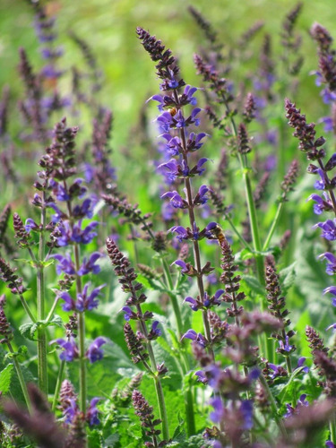

Simpson Garden Center
About Us
We are the Simpson Garden Center, a haven for botanists and nature-lovers alike. We house a variety of plants, as well as sell various seeds and planting tools, as well as manuals if you need some assistance with planning your gardenscape. The Simpson Garden Center was founded in 1954 by Taylor Walkman, a young woman who wanted to brighten up Simpson's campus with a variety of plant life, molding into the exotic ecosystem we see before us today.
